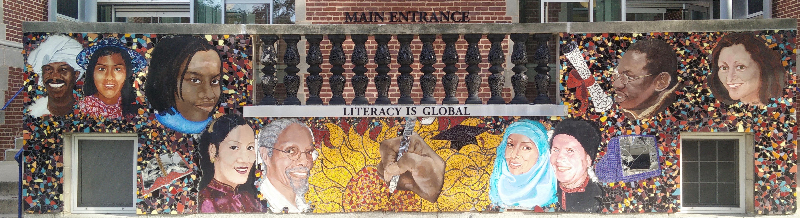
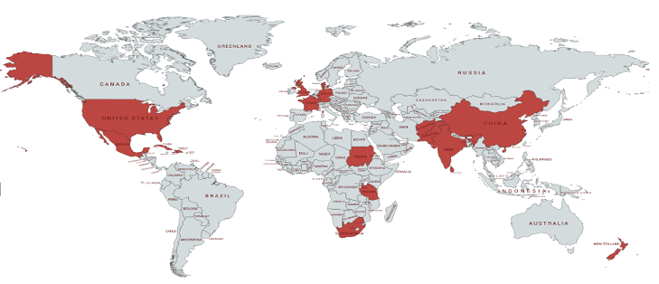

Sessions typically consist of 6-9 classes, each 90 minutes in length and students are welcome to work with their teacher for multiple terms. Specific class times and dates are adjusted in accordance with student schedules and proficiency.
International Inquiry Units are designed to help teachers and students shift from being passive recipients of international content to taking part in proactive inquiry (proactively thinking about, investigating and connecting with the context being explored). Units typically focus around the reading and analysis of a core book, with opportunities to link that book to history, current events, and a variety of disciplines. Within small groups, students will have opportunities to reflect about what elements contribute to good pieces of writing, to utilize such strengths in their own writing, and to support each other’s work through collaborative ideation and feedback. Many of methodologies we use for feedback, supporting student thinking and discussion are inspired by research from the Harvard Graduate School of Education. We have developed units centered on twenty different explorations (each with a different central book and country) and we will pick one unit depending on students reading levels and interests.
Sample Units:

In this class, students will have the opportunity to explore these questions and develop creative pieces of writing under the guidance of an experienced writing coach. Throughout the class, students will have the opportunity to read, analyze and discuss quality works of fiction and to experiment with different writing styles and techniques. Students will be asked to not only develop their own works but to brainstorm as a group, learning how to receive and offer feedback, and how to use that feedback to strengthen a story over time.
For persuasive writing, we explore core methods that support students essay writing for examinations including the TOEFL, SAT, and numerous subjects in school.
These are the questions that drive the focus of our public speaking classes. In response to the first question “How can we improve our public speaking abilities?” a professor at University of California, Berkeley has a fairly straightforward answer that we have found to be true. . . “Do it. There is no better way to improve your public speaking abilities than by taking opportunities to practice speaking in front of other people.” For this class, our main goal is to give students an opportunity to learn about and practice public speaking together, while also exploring and sharing about topics that they find interesting and meaningful.
In this class students will have the chance to learn the fundamentals of computer science with Python. Students will learn to think through problems and mathematics principles using coding language. In the process students will be able to read and discuss coding articles in English, and explore fun examples. Opportunities will also be provided to research and write about modern applications of coding across industries, and to think about the link between computer science and design. The teacher and designer of this course has studied CS and works as a TA for CS classes at Harvard.
Sign up and/or receive more info about our classes.
Email: studentsforstudents.uschina at gmail.com
Good Bee Education LLC